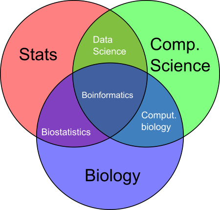

5 Years
ในห้าปีหลังจบการศึกษา หากมีโอกาสผมมีความตั้งใจที่จะต่อปริญาโท
ในสาขาวิทยาการคอมพิวเตอร์ หรือ ชีวสารสนเทศครับ เพื่อศึกษาให้ลึกขึ้น
เนื่องจากผมมีความชอบใน แขนง Bioinformatics หากสามารถนำ
2 แขนงที่ชอบมารวมกัน ผมคิดว่าน่าจะเหมาะกับตัวผมครับ
10 Years++

ในวันนี้ ภาพตัวผมมองในอีกราว ๆ สิบปีข้างหน้า อยากทำการเรียนรู้เกี่ยวกับ ระบบ
ชีวสารสนเทศ หรือใกล้เคียงตามภาพประกอบครับ ไม่ว่าจะในฐานะ อาชีพ หรือนักวิจัย ในตอนนี้ผมมองแค่ชอบด้านนี้จึงเป็นความรู้สึกผลักดันให้ไปทางนี้ครับ ขอบคุณครับ
ชีวสารสนเทศ หรือใกล้เคียงตามภาพประกอบครับ ไม่ว่าจะในฐานะ อาชีพ หรือนักวิจัย ในตอนนี้ผมมองแค่ชอบด้านนี้จึงเป็นความรู้สึกผลักดันให้ไปทางนี้ครับ ขอบคุณครับ